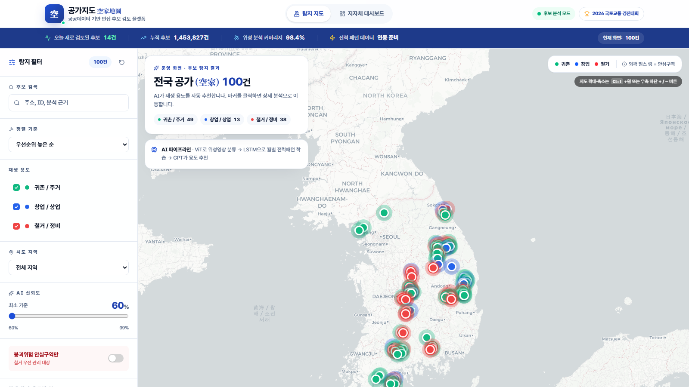
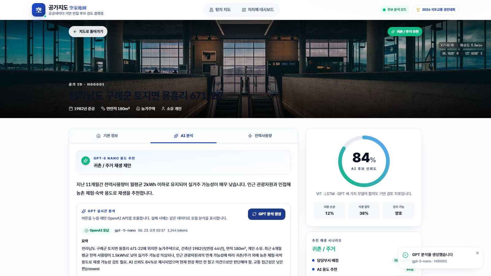
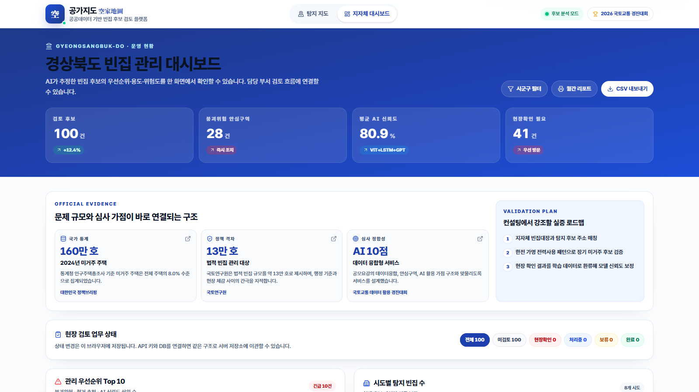

2026 국토교통 데이터활용 경진대회
공가지도
공공데이터와 AI로 미등록 빈집 후보를 먼저 찾고, 지자체 현장조사 우선순위를 추천합니다.

문제 규모
빈집 문제는 커지고 있습니다
빈집은 단순한 공실이 아니라 안전, 미관, 정주환경, 행정비용과 연결되는 도시 관리 문제입니다.
약 160만
2024년 미거주 주택
전체 주택의 약 8% 수준으로 집계됩니다.
13만
법령상 빈집 관리 대상
전국 단위 일제 조사 기준 약 13만 호입니다.
0.7%
법령상 빈집 비율
통계상 미거주 주택과 관리 대상 사이의 간극이 큽니다.
핵심 문제
더 큰 문제는 ‘통계와 현장 관리의 간극’입니다
빈집이 많다는 사실보다, 관리해야 할 후보를 선별하는 체계가 부족하다는 점이 핵심입니다.
통계상 미거주 주택
사람이 살지 않는 주택을 폭넓게 집계
- 2024년 기준 약 160만 호
- 공실, 일시 미거주, 사용 중단 가능성 포함
- 행정 조치 대상과 바로 일치하지 않음
법령상 관리 빈집
현장 확인과 제도 기준을 거친 관리 대상
- 2024년 전국 조사 기준 약 13만 호
- 지자체 조사와 정비 업무의 실제 기준
- 미등록·누락 후보를 먼저 좁히는 절차 필요
기존 방식의 한계
현재 방식은 확인된 빈집 중심입니다
기존 시스템은 꼭 필요하지만, 현장조사 전 후보 선별과 우선순위 판단을 보완할 앞단이 필요합니다.
발견이 늦다
- 등록·신고 이후에야 관리가 시작됩니다.
- 실제 빈집이지만 누락되는 사례가 생길 수 있습니다.
우선순위가 어렵다
- 인력과 시간이 제한된 상황에서 전체를 같은 강도로 볼 수 없습니다.
- 위험도와 활용 가능성을 한 화면에서 보기 어렵습니다.
활용 연결이 약하다
- 정비, 매입, 귀촌, 창업 정책으로 이어지는 판단 흐름이 분리됩니다.
- 현장조사 전 검토 기준이 필요합니다.
핵심 전환
조회에서 사전 탐지로
공가지도는 빈집을 확정 판정하지 않고, 현장조사 전에 확인해야 할 후보와 순서를 제안합니다.
기존
등록 빈집 조회
- 이미 확인된 정보를 확인
- 현황 관리 중심
- 미등록 후보는 별도 조사 필요
→
공가지도
후보 탐지와 우선조사 추천
- 공공데이터로 의심 후보 선별
- 위험도·활용 가능성 동시 점수화
- 담당자가 먼저 볼 주소를 제안
솔루션 구조
공공데이터에서 행정 조치까지 연결합니다
분석 결과를 지도에 띄우는 데서 끝내지 않고, 담당자의 다음 행동까지 이어지게 설계했습니다.
- 1공공데이터 수집건축물, 에너지, 입지, 정책 데이터
- 2AI 후보 탐지장기 미사용·관리 흔적·입지 패턴 분석
- 3위험·활용 점수안전 위험과 재생 가능성 동시 계산
- 4지도 시각화필터와 우선순위로 후보 탐색
- 5행정 조치현장확인, 정비, 상담, 리포트
실제 구현 화면 1
지도에서 후보와 판단 근거를 한 번에 확인합니다
위치, 추천 용도, 신뢰도, 안심구역 여부를 필터링하며 확인할 수 있습니다.
실제 배포 화면

실제 구현 화면 2
상세 화면에서 GPT 체크리스트까지 생성합니다
전력 패턴, 건축 정보, AI 신뢰도, 현장 확인 체크리스트를 한 화면에서 검토합니다.
OpenAI 응답 확인

실제 구현 화면 3
단순 지도에서 끝나지 않고 행정 업무로 연결합니다
우선순위, 현장확인 필요, CSV 내보내기, 월간 리포트 흐름까지 구현했습니다.
지자체 대시보드

데이터·AI 활용 구조
여러 데이터를 융합해 후보를 좁힙니다
현재는 샘플 데이터 기반 MVP이며, 기관 API 승인 후 같은 구조로 실데이터를 연결합니다.
입력 데이터
건축물대장전력·에너지위성영상교통 접근성인구·상권정책·정비 데이터
↓
AI 분석 엔진
빈집 후보 점수위험도활용 가능성
행정 활용 출력
우선조사 추천
현장확인 체크리스트
담당부서 배정
정비·활용 시나리오
“공공데이터만으로 확정하지 않고, 현장조사를 더 잘 시작하도록 돕습니다.”
정책 활용 시나리오
현장조사를 대체하지 않고, 준비를 효율화합니다
후보 탐지 결과는 지자체 실태조사와 정비·활용 정책으로 이어지는 출발점이 됩니다.
- 1후보 탐지공공데이터 기반 의심 주소 도출
- 2우선순위위험도·활용성 기준으로 정렬
- 3현장확인지자체 절차와 담당자 판단
- 4정비·매입철거, 매입, 안전 조치 검토
- 5활용 연계귀촌, 주거, 창업 공간으로 전환
확장 계획
방치된 공간을 도시 자산으로 바꾸겠습니다
지자체 실증에서 시작해 공공데이터 연동, 업무 DB, 유휴공간 플랫폼으로 확장합니다.
1단계운영형 MVP 배포 완료
2단계지자체 실증과 현장 검증
3단계공공데이터 API·DB 연동
4단계폐교·빈상가 등 유휴공간 확장
공가지도는 “나중에 확인하는 지도”가 아니라, “먼저 발견하고 다시 연결하는” 도시 데이터 플랫폼입니다.
kyo-map.vercel.app